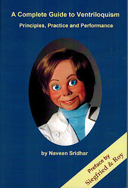

Complete Guide to Ventriloquism
1/30/2012
{kind=link}

A COMPLETE GUIDE TO VENTRILOQUISM: Principles, Practice and Performance. By Naveen Sridhar, Ph.D. I've read many books on the subject of ventriloquism, but even after a 50+ year career, I still found this in-depth work to be fresh, captivating, and informative. 241 pages, extremely detailed, covering everything about the art, from basics to advanced performance. Unique in that the author gives great attention to detail including the psychological basis of the art.You will find all this and more details under http://www.ventriloquism-book.com/. The book is now on sale at Amazon (proceed to the Amazon.com site and type in “Naveen” and “ventriloquism” to reach the landing page).
The author was born in India and moved to Germany in his youth. Using the stage name "Yakasha", he worked as a professional magician and ventriloquist, performing and lecturing for various organizations around the world. Fluent in eight languages, and experienced in both performance with his dummies as well as advanced techniques such as echo, telephone voice, and more, Dr. Sridhar is well qualified to lead you and your ventriloquial skills to a new dimension.